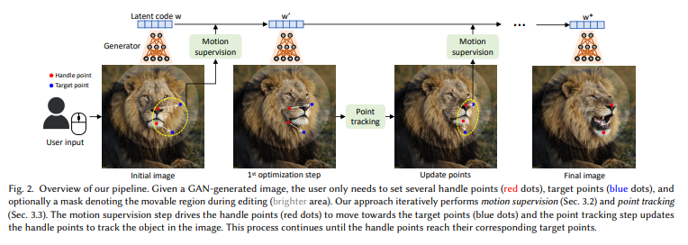
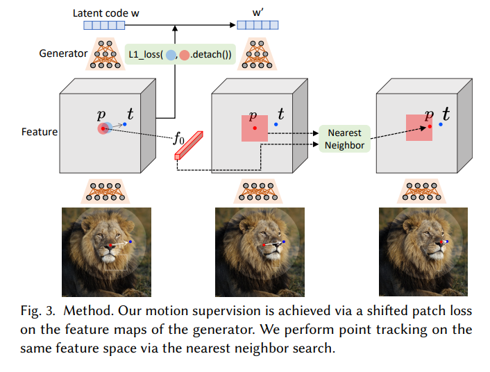

一、简介
问题
合成符合用户需求的视觉内容通常需要对生成对象的姿势、形状、表情和布局进行灵活而精确的可控性。现有方法通过手动注释的训练数据或先前的3D模型获得了对生成对抗网络（GANs）的可控性，但往往缺乏灵活性、精确性和普适性。
本文贡献
以用户交互的方式”拖动”图像中的任意点以精确到达目标点。DragGAN包括两个主要组成部分：
feature-based motion supervision，使点向目标点移动；
一种利用discrimitive feature进行点跟踪的新方法，持续定位操作点的位置。
二、相关工作
交互式内容创作的生成模型
对于可控的图像合成，目前的方法一般使用GAN或diffusion models。
无条件GAN/Unconditional GAN：GAN是生成模型，将低维随机采样的潜在向量转换为逼真的图像。它们使用对抗学习进行训练，可以用于生成高分辨率的逼真图像。大多数GAN模型，如StyleGAN，不能直接实现对生成图像的可控编辑。
条件GAN/Conditional GAN：一些方法提出了条件GAN来解决这个限制。在条件GAN中，除随机采样的潜在向量之外，网络接收到一个条件输入，比如分割图或3D变量，以生成逼真的图像。与对条件分布进行建模不同，EditGAN通过首先建模图像和分割图的联合分布，然后计算对应于编辑后分割图的新图像来实现编辑功能。
使用无条件GAN的可控性。已经有几种方法，通过操作输入的潜在向量来编辑无条件GAN。
通过从手动注释或在先前的3D模型中进行监督学习来找到有意义的潜在方向。
以无监督的方式计算潜在空间中重要的语义方向。
通过引入中间的“斑点”或热图，实现了对粗略物体位置的可控性。
所有这些方法都可以编辑与图像对齐的语义属性（如外观）或粗略的几何属性（如物体位置和姿态）。虽然Editing-in-Style展示了一些空间属性编辑能力，但它只能通过在不同样本之间转移局部语义来实现。与这些方法不同，我们的方法允许用户使用基于点的编辑对空间属性进行精细控制。
GANWarping也使用基于点的编辑，但它们只能实现out-of-distribution的图像编辑。可以使用一些扭曲的图像来更新生成模型，以便所有生成的图像都显示类似的扭曲效果。然而，该方法不能确保扭曲会产生逼真的图像。此外，它也无法实现诸如改变物体的三维姿态等控制。
与我们类似，UserControllableLT通过转换GAN的潜在向量实现基于点的编辑。然而，该方法只支持使用鼠标拖动图像上的单个点进行编辑，并且无法很好地处理多点约束。此外，该方法的控制不是很精确，即在编辑后，通常无法准确达到目标点。
3D-aware GANs. 一些方法修改了GAN的架构以实现3D控制。在这些方法中，模型生成可以使用基于物理的解析渲染器进行渲染的3D表示。然而，与我们的方法不同，这些方法的控制仅限于全局姿态或光照。
Diffusion Models. 最近，扩散模型已经实现了高质量的图像合成。这些模型通过迭代去噪随机采样的噪声来创建逼真的图像。最近的模型已经展示了在文本输入条件下表现出的富有表现力的图像合成能力。然而，自然语言无法对图像的空间属性进行精细控制，因此所有基于文本的方法都局限于高级语义编辑。此外，当前的扩散模型速度较慢，因为它们需要多个去噪步骤。尽管在高效采样方面取得了一些进展，但GAN的效率仍然显著更高。
Point Tracking 点跟踪
光流估计是一个经典问题，用于估计两幅图像之间的运动场。
手工设计规则解决优化问题。
基于深度学习的方法，通常使用带有光流真值的合成数据来训练深度神经网络。
RAFT：目前最广泛使用的方法，通过迭代算法估计光流。
PIPs：将RAFT与传统的particle video方法相结合，考虑了多帧间的信息，因此比以前的方法更好地处理了长距离跟踪。
本文不使用前面提到的任何方法或额外的神经网络。我们揭示了GAN的特征空间具有足够的区分性，以至于可以通过特征匹配来实现跟踪。首次将基于点的编辑问题与区分性的GAN特征联系起来。摆脱额外的跟踪模型使得我们的方法可以更高效地运行，以支持交互式编辑。
三、方法
基本结构StyleGAN2：512维的潜在编码$z \in N(0,I)$通过网络映射到中间潜在编码$w \in \Bbb{R}^{512}$，$w$作为generator的输入，产生输出图像$I=G(w)$。在这个过程中，$w$被拷贝多次，输送到generator的不同层，来控制不同级别的属性。
也可以对不同层使用不同的$w$，输入变成$w \in \Bbb{R}^{l\times 512}=W^+$，其中$l$是层数。当generator学习到一个从低维潜在空间到高维图像空间的映射，可以看做在模拟一个图像流形。
Manifold（流形）：满足连续性，局部坐标转移性和可微性。
基于点的交互式操作

输入：对于一张对应潜在编码$w$的GAN生成的图像$I\in \Bbb{R}^{3\times H \times W}$，用户输入一系列handle points以及对应的target points，指定操作区域的mask是可选项。
优化过程：每一步会得到一个新的潜在编码$w’$和新的图像$I’$
a. motion supervision：a loss that enforces handle points to move towards target points is used to optimize the latent code
b. point tracking：因为每一步只从handle point往target point移动了一小步（由于复杂动态优化，每一步的实际长度是不确定的），所以要更新handle points，否则下一步就会用错误的点进行监督。
实验中需要30-200次迭代。
motion supervision

本文提出的motion supervision loss不依赖于任何额外的神经网络。
中间特征是区分性很强的，简单的损失函数就足以完成监督。在StyleGAN2的第6个block后的特征图$F$在分辨率和区分性上整体表现比较好，通过双线性插值resize $F$，使特征图和最终的输出图像拥有相同的分辨率。
对于某个点$p_i$，监督以它为圆心的一个小区域$\Omega_1(p_i,r_1)$，将损失定义为
其中$d_i=\frac{t_i-p_i}{||t_i-p_i||_2}$是从$p_i$到$t_i$的正规化向量。由于$q_i+d_i$不是整数，需要通过双线性插值得到$F(q_i+d_i)$。梯度不通过$F(q_i)$进行反向传播。
如果有mask，使用重建损失让unmasked区域固定（式中第二项）。
$W^+$空间表达力更强，可以实现out-of-distrubution操作，本文使用$W^+$。
实验中，我们发现空间属性主要受前6层影响，后面的只影响外观。受style-mixing technique [Karras et al. 2019]启发，我们只在前6层更新$w$，固定其他层的$w$保留外观特征。
经过这一步，得到新的潜在编码$w’$，新的特征图$F’$，以及新的图像$I’$。
point tracking
为了提高效率，避免累积误差（GAN有alias artifacts），不使用optical flow estimation或particle video approaches。
本文提出新的追踪方式：具有区分性的特征很好地捕捉了稠密的对应性，在特征图像块中进行最近邻搜索可以完成高效的点跟踪。
将区域定义为$\Omega_2(p_i,r_2)=\{(x,y)|\ |x-x_{p,i}| < r_2,|y-y_{p,i}| < r_2 \}$，最初的handle point为$f_i=F_0(p_i)$，在区域内搜索$f_i$的最近邻，
即可得到tracked point。
特征图分辨率是256×256，足以进行准确的跟踪；另外，可以通过双线性插值得到需要的图像大小。
四、实验
Baselines
我们的主要baselines是UserControllableLT [Endo 2022]，其设置与我们的方法最接近。UserControllableLT不支持蒙版输入，但允许用户定义一些固定点。因此，对于带有蒙版输入的测试案例，我们在图像上采样一个常规的16×16网格，并使用蒙版外的点作为UserControllableLT的固定点。
此外，我们还将与RAFT [Teed and Deng 2020]和PIPs [Harley et al. 2022]进行比较，用于point tracking。为此，我们创建了两个变体的方法，其中point tracking部分被这两种追踪方法所取代。
Qualitative Evaluation
与UserControllableLT的定性比较。我们展示了对多个不同物体类别和用户输入进行的图像操作结果。我们的方法能够准确地移动处理点以达到目标点，实现了多样化和自然的操作效果，如改变动物的姿势、汽车的形状和风景的布局。相比之下，UserControllableLT无法准确地将处理点移动到目标点，经常导致图像中不期望的变化，例如人物的服装和汽车的背景。它还不能像我们的方法那样保持未遮罩区域固定。
与PIPs和RAFT进行了比较。我们的方法准确地跟踪了位于狮子鼻子上方的处理点，成功地将其移动到目标位置。在PIPs和RAFT中，跟踪点在操作过程中开始偏离鼻子。因此，它们将错误的部分移动到目标位置。当没有进行跟踪时，固定的处理点很快就开始驱动图像的其他部分（例如背景），几步之后就无法停止，无法实现编辑目标。
真实图像编辑。通过使用将真实图像嵌入StyleGAN的潜在空间的GAN反演技术，我们也可以应用我们的方法来操作真实图像。图5展示了一个示例，我们使用PTI inversion[Roich et al. 2022]将真实图像转换到潜在空间，然后对图像中的脸部进行一系列操作，编辑姿势、发型、形状和表情。
Quantitative Evaluation
人脸关键点操作
由于使用现成的工具对人脸关键点进行检测非常可靠 [King 2009]，我们将其预测作为真实关键点。具体而言，我们使用在FFHQ数据集上训练的StyleGAN随机生成两张人脸图像，并检测它们的关键点。目标是将第一张图像的关键点操作到与第二张图像的关键点匹配。在进行操作后，我们检测最终图像的关键点，并计算与目标关键点的平均距离（MD）。结果在1000次测试中进行平均。同一组测试样本用于评估所有方法。通过这种方式，最终的MD得分反映了方法将关键点移动到目标位置的程度。我们在不同数量的关键点（1、5和68个）下进行评估，以展示我们的方法在不同数量的操作点下的鲁棒性。我们还报告了编辑后的图像与初始图像之间的FID分数，作为图像质量的指标。在我们的方法及其变体中，最大优化步数设为300步。
我们的方法在不同数量的点下明显优于UserControllableLT。在图7中展示了定性比较，我们的方法张开了嘴巴并调整了下颚的形状以与目标人脸匹配，而UserControllableLT则未能做到。此外，根据FID分数，我们的方法保持了更好的图像质量。由于更好的跟踪能力，我们的操作比RAFT和PIPs更准确。不准确的跟踪也会导致过度的操作，从而降低图像质量，如FID分数所示。尽管UserControllableLT速度更快，但我们的方法在这个任务中推动了上限，实现了更加忠实的操作同时保持了对用户来说舒适的运行时间。
配对图像重建
在这个评估中，我们按照UserControllableLT [Endo 2022]的设置进行。具体来说，我们采样一个潜在编码$w_1$，并以与[Endo 2022]相同的方式随机扰动它以得到$w_2$。设$I_1$和$I_2$为从这两个潜在编码生成的StyleGAN图像。然后，我们计算$I_1$和$I_2$之间的光流，并从光流场中随机采样32个像素作为用户输入$U$。目标是从$I_1$和$U$重建$I_2$。我们报告MSE和LPIPS [Zhang et al. 2018]，并将结果在1000个样本上求平均。我们的方法和其变种中，最大优化步数设置为100。我们的方法在不同的对象类别上都优于所有baselines方法，这与之前的结果一致。
消融研究
我们研究了在运动监督和点追踪中使用哪种特征的效果。我们报告使用不同特征进行人脸关键点操作时的性能（MD）。在运动监督和点追踪中，StyleGAN的第6个块之后的特征图表现最佳，显示出最佳的分辨率和区分性。我们还提供了$r_1$的影响结果。可以观察到，性能对于$r_1$的选择并不敏感，而$r_1 = 3$略微更好一些。